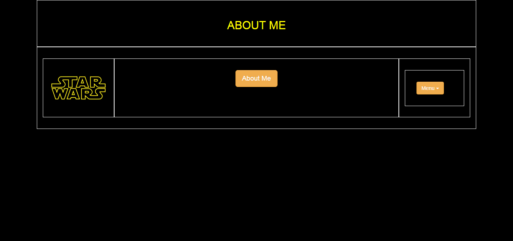

This is my second portfolio website. I am using
HTML,
CSS,
and the Bootstrap
grid system.
This webstie includes an About
page, a Projects page,
and a Technology page.
Here is a screenshot of my current About Me page and a
screenshot of my first About Me page on my first Portfolio
Website.
Portfolio Screenshots
My first portfolio website used basic elements of HTML and CSS.

My second portfolio website uses more advanced and
responsive features. It was built using HTML, CSS, and Bootstrap.
